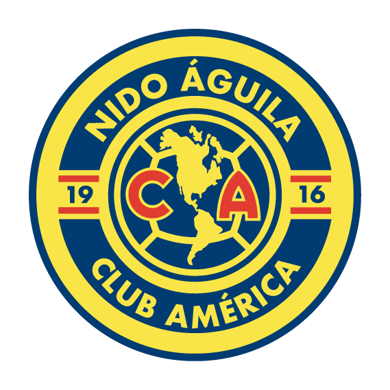

The Rivalry
Derby demand
A fixture that stops a nation — sold-out gates and broadcast numbers that punch far above the league average.
One language for every prospectus, pitch deck and product surface GSC ships — the tokens, type and components behind the investment-grade look you already know.
GSC is a multi-program sports ecosystem. Each academy has its own confirmed brand — palette, type, and voice — approved by Luisa León. Apply a program with data-program="gsa" (etc.) on a root element.

* Proprietary font — not bundled; see DESIGN.md §4. All palettes confirmed by Luisa León.
Stadium-night ink, two brand flames and a trophy-parchment warm. Condensed caps for impact, humanist sans for reading. Everything downstream is built from these.
Every block from the prospectus, generalised and reusable — plus the buttons, forms and tables a live product needs. Each carries a .gsc- prefix.
A fixture that stops a nation — sold-out gates and broadcast numbers that punch far above the league average.
Renegotiated distribution and a direct-to-diaspora streaming tier unlock new recurring revenue.
A player-trading model that turns youth development into a repeatable export.
This is the warm parchment band — reserved for the single most important claim on a page. Dark ink type on crema, a confident all-caps headline, and a divider that leads into the proof points.
The red band signals urgency and timing — solid brand red, dark type, used sparingly for the call that matters most.
The subtle tint band — a red-to-orange wash on ink with a hairline border. For turnaround narratives and inline highlights that shouldn't shout.
Illustrative. SVG geometry is authored in markup; colour & type come from .gsc-bar classes.
| Club | Titles | EV / rev |
|---|---|---|
| This asset | 30+ | 1.4× |
| Regional peer A | 18 | 2.9× |
| Regional peer B | 12 | 3.6× |
| League median | — | 2.7× |
The .gsc-table component — data-room ready, rows lift on hover.
The same tokens and components, spoken correctly in each medium — a slide, a phone, a printed memorandum. Each ships a working template and a written guide.
Cover, section, content, stat, quote & iconography slides with FONDOS backgrounds — mirrors the official GSC PowerPoint. Open template →
Hero → proof → CTA narrative built from core components: nav, stat strip, feature grid, crema & red bands. Open template →
Status bar, app bar, tab bar, list rows and stat scrollers — 44px touch targets, mobile type scale, safe areas. Open template →
Letterhead, callouts, figures and tables on A4 — the one place the palette inverts to dark ink on paper. PDF/DOCX ready. Open template →
Also covered: Forms · Brand & voice · full index in docs/.
Import one stylesheet, reach for the tokens, compose the components. The look stays investment-grade, every time.